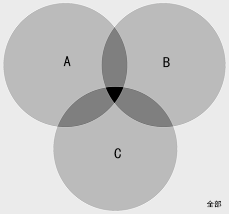

- 加减
- 奇和为偶：
奇 + 奇 = 偶
- 奇偶和奇：
奇 + 偶 = 奇、偶 + 奇 = 奇
- 和差同性：
M + N与M - N的奇偶同性
- 同和为偶：
X + X = 偶
- 相乘
- 有偶为偶：
奇 × 奇 × ... × 偶 = 偶
- 全奇为奇：
奇 × 奇 × ... × 奇 = 奇
例：77个蛋糕，大盒能装15个，小盒能装8个，要求恰好装满，问需要几个盒子。
77=15x+8y，因为77为奇数、8y为偶数，所以15x一定为奇数，即x一定为奇数。x在1,3,5中尝试，得x=3，y=4，x+y=7。
若a能被b整除，则a mod b=0。
| 数字 |
方法 |
例子 |
| 2 |
个位是否能被2整除 |
122、254 |
| 5 |
个位是否能被5整除 |
255、395 |
| 4 |
末2位是否能被4整除 |
812、724、636 |
| 25 |
末2位是否能被25整除 |
725、825 |
| 3 |
各位数字和能否被3整除 |
156（1+5+6=9） |
| 9 |
各位数字和能否被9整除 |
675（6+7+5=18） |
| 7 |
个位2倍与剩下数之差能被7整除或
末3位与剩下数之差能被7整除 |
392（4-39=-35）
8442（442-8=434、8-43=35） |
| 11 |
奇数位和-偶数位和能被11整除或
末3位与剩下数之差能被11整除 |
9658（658-9=649、6+9-4=11）
15235（235-15=220、2+0-2=0） |
| 13 |
末3位与剩下数之差能被13整除 |
1274（274-1=273=260+13） |
补充性质：
- 整除传递：{a mod b=0 && b mod c=0} ⇒ {a mod c=0}
- 同子和差：{a mod c=0 && b mod c=0} ⇒ {(a+b) mod c=0 && (a−b) mod c=0}
- 倍父同效：{a mod c=0 && n∈N} ⇒ {na mod c=0}
- 同堂互质：{a mod b=0 && a mod c=0 && a,b互质} ⇒ {a mod bc=0}
若{a mod c=b mod c}，则称a、b对于c同余。
- 设a=xc+v、b=yc+w
- (a+b) mod c=(v+w) mod c
- (a−b) mod c=(v−w) mod c
- (a⋅b) mod c=(v⋅w) mod c
例1：求2011×2012的余数
2011×2012 mod 6=(2011 mod 6)×(2012 mod 6)=(1×2) mod 6=2
例2：一个整数除x,y,z的余数都为r，求这个整数。
余同加余：(x, y, z)的最小公倍数 + r
例3：一个整数除x,y,z的余数分别为(r−x),(r−y),(r−z)，求这个整数。
和同加和：(x, y, z)的最小公倍数 + r
例4：一个整数除x,y,z的余数分别为(x−r),(y−r),(z−r)，求这个整数。
差同加差：(x, y, z)的最小公倍数 + r
互质：若a、b的最大公因数为1，则称a、b互质。
求解方法：质因数分解。
求解方法：先求最大公因数、再将两边剩余因数相乘、最后乘以最大公因数。
例1：求24与36的最小公倍数
24 = 2 × 12、36 = 3 × 12则2 × 3 × 12 = 72
例2：已知⎩⎨⎧60=x1+x2+y1+y2+z4(x2+y2)=(x1+y1)(y1+y2)=7(x1+x2)，问z=?（变量全为整数）
A.12 B.15 C.20 D.25
⎩⎨⎧(x2+y2)=560−z(x1+x2)=860−z
即(60−z)为5和8的最小公倍数，即为40，故z=20
- 和倍关系：已知s=(a+b)、p=ba，则b=p+1s
- 和差关系：已知s=(a+b)、d=(a−b)，则a=2s+d
例1：三人生肖相同，年龄和为72，则年龄最小的人今年不可能为：
A.6 B.8 C.12 D.16
设最小的人年龄为x，其它两人分别为(x+a)、(x+b)，则有
72=x+(x+a)+(x+b)，即(a+b)=72−3x
三人生肖相同，故(a+b)一定为12的整数倍
故3x也一定为12的整数倍，即x为4的整数倍
综上答案为A
①前两项与后一项（可能有间隔）的关系（ai+1=ai ? ai−1）
②位置信息代入什么公式（线性+i,×i、指数+in,×in）
③数本身是否已经包含位置信息（ai=i× ? ）
例：1, 2, 4, 7, 11, ( ), ( )。
- 作差：
1, 2, 3, 4, (5), (6)
- 结果：
1, 2, 4, 7, 11, (16), (22)
例：3, 6, 18, 72, 360, ( )。
- 做商：
2, 3, 4, 5, (6)
- 结果：
3, 6, 18, 72, 360, (2160)
例：1, 2, 3, 8, 27, 220, ( )。
- 作积：
1×2+1=3, 2×3+2=8, 3×8+3=27, 8×27+4=220, 27×220+5=(5945)
例：1, 2, 3, 5, 8, 13, 21, ( )。
- 作和：
1+2=3, 2+3=5, 5+8=13, 8+13=21, 13+21=(34)
i2:0,1,4,9,16,25,⋯
i2−i:0,0,2,6,12,20,⋯
i3:0,1,8,27,64,125,⋯
i3−i:0,0,6,24,60,120,⋯
例：0, 0, 6, 24, 60, 120, ()。
- 指数：
0**3-0=0, 1**3-1=0, 2**3-2=6, 3**3-3=24, 4**3-4=60, 5**3-5=120, 6**3-6=(210)
例：3, 8, 15, 24, ( )。
- 分解：
1×2+1=3, 2×3+2=8, 3×4+3=15, 4×5+4=24, 5×6+5=(35)
解题思路：某时间段年龄x、y，关系为f(x,y)，n年后关系g(x+n,y+n)，则有
{f(x,y)g(x+n,y+n)
例：3年前A是B的年龄的17倍，3年后，A是B的年龄的5倍，问B现在多少岁。
设3年前A、B年龄分别为x、y，则有：
{x=y×17(x+6)=(y+6)×5
解得x=34、y=2
火车过桥：速度 × 时间 = 车长 + 桥长
火车相遇：相遇时间 × (甲车速 + 乙车速) = 甲车长 + 乙车长 + 甲乙距离
火车追及：追及时间 × (甲车速 - 乙车速) = 甲车长 + 乙车长 + 甲乙距离
例：一列火车长150米，速度19m/s。全车通过长800米的大桥，需要多少时间
t=19150+800=50s
解题思路：(船速 + 水速) × 顺行时间 = (船速 - 水速) × 逆行时间
例：甲船从A地航行到下游需要6小时，由B地航行到A地需要12小时，乙船在静水中的速度是甲船的3倍，问乙从B航行到A需要多长时间。
设两地距离为L，水速为s，甲船速度为v，则有：
⎩⎨⎧L=(v+s)6=(v−s)12 ⇒ v=3s,L=24s3v−sL=9s−s24s=3
相向相遇：两地距离 = 相遇耗时 × (甲速度 + 乙速度)
快返相遇：2 × 两地距离 = 相遇耗时 × (甲速度 + 乙速度)
同地多次相遇：两人总移动距离 = 两地距离 × (2 × 相遇次数)
异地多次相遇：两人总移动距离 = 两地距离 × (2 × 相遇次数 - 1)
同地环型相遇：两人总移动距离 = 第一次相遇两者移动距离 × 相遇次数
A、B从相距L的两地相向而行，C随A一起出发在A与B之间来回奔跑，三者速度分别为va、vb、vc（vc>va），问当A与B相遇时，C跑的路程sc为多远？
- L=t×(va+vb)
- sc=t×vc
解题思路：利润 = 售价 - 成本 = 利润率 × 成本
例：进价800，标价1440，希望打折后利润率不低于35%，最低可以打几折？
8001440×x−800≥0.35 ⇒ x≥0.75
解题思路：工作量 = 工作效率 × 时间，完成单个任务所耗费的时间的倒数即为工作效率。
解题思路：(全部工作量 - 已完成工作量) = 新工作效率 × 剩余时间
例：14台收割机收完麦子需要20天，收割了2天后，增加了6台，并改造使效率提升5%，问还需要几天收完？
设初始每台每天工作效率为e
t=20e×(1+5%)14e×20−14e×2=12
- t1=eq、t2=e(1+p)q=eq⋅1+p1、t1−t2=eq⋅1+pp
- t1−t2t1=p1+p（提效倍比）
解题思路：原效率总时间 = 提前时间 × 提效倍比、工作量 = 提前时间 × 提效倍比 × 原效率
例1：计划植树300棵，实际效率为原效率1.2倍，结果提前20分钟完成，求原效率（棵/小时）？
e=31×0.21.2300=150
例2：种树，每天多种41提前9天完成，种了4000棵后每天多种31提前5天完成，共有多少树？
{q=9×1/41+1/4×e(q−4000)=5×1/31+1/3×e ⇒ e=160,q=7200
xeq−yeq=Δt ⇒ q=x1−y1Δte
解题思路1：总工作量 = 所有人工作效率和 × 总工作时间
解题思路2：总工作量 = (不同效率时间差/效率倒数差) × 单位效率
例1：修2个隧道（900米、1250米），A、B、C队效率分别为24、30、32米/天，A队修1隧道，C队修2隧道，B队先修1后修2，两地同时完工，B修了几天1隧道？
900+1250=(24+30+32)t ⇒ t=25
或
{900=24t+30t01250=32t+30(t−t0) ⇒ t=25,t0=10
例2：3名绣工8天可完成，完成50%时一人离开，完成75%时又一人离开，最后实际用了几天。
q=3e×8=24e
3e21×24e+2e41×24e+e41×24e=13
例3：四人合作效率比为3:5:4:6，前2个合作比后2个合作多9天，问4人合作共需要多少天？
q=81−1019=360e
18e360e=20
例4：甲单独16小时，乙单独12小时，甲乙交替每次1小时，问需要多久？
由完成时间比得甲乙效率比为3:4（时间的反比）
q=31−4116−12=48e
7e48e=6...6e
3e6e=1...3e
4e3e=0.75
t=6×2+1+0.75=13.75
q=t1e1=t2e2、e1−e2q=t1q−t2qq=t2−t1t1t2
解题思路：消耗时间 = 时间积/时间差
例：A口入水，灌满需要2h；B口出水，满池放空需要1.5h；现有1/3水，同时打开AB口，排空需要多久？
t=31⋅2−1.51.5×2=2
排列数：Anm=(n−m)!n!
全排列：Ann=n!
组合数：Cnm=m!Anm=m!1⋅(n−m)!n!
条件概率：A在B发生的条件下发生的概率为，P(A∣B)=P(B)P(AB)
独立重复实验：每次A发生的概率为p，在n次实验中A发生k次的概率为，P(Ak)=Cnkpk(1−p)n−k
例1：4个信箱，5封信，有几种投法？
每封信有4个选择，共有45=1024种。
例2：7×7队列，随机选中一个，再选中一个不再同行同列的，有几种选法。
(7×7)×(6×6)=1764
例1：10个人，选4个排一列，几种排法？
A104=7×8×9×10=5040
例1：8个人，选4个培训，2个培训计算机，1个培训英语，1个培训财务，有几种人选方法？
C82C61C51=28×6×5=840
例1：5男，5女，选4人，每人表演1个节目，要求4人有男有女，不能由男生连续表演。
①、1男3女：(C51C53)A44=1200
②、2男2女：(C52C52)A22A32=1200
③、3男1女：不满足连续表演要求
综上：1200+1200=2400
例1：3组老年夫妇看电影坐一排（6个位置），同一家庭必须坐一起，有几种坐法？
A33×(A22)3=48
例2：拔河比赛，3男3女，3男不能全部连在一起，有几种不同的站位？
3男看成整体，A66−A44×A33=576
例1：两部门分别排3个，2个节目，要求不能连续出场，有几种排法？
A33×A22=12
例2：12棵松树，6棵柏树，种道路两侧，两侧树种数量相同，要求道路起始必为松树，柏树不能相邻，有几种种法？
每侧6棵松树，5个空，(C53)2=100
例1：7个橘子分给4个小朋友，每人至少一个，有几种分配方法？
7个橘子6个空，4个小朋友3个挡板，C63=20
例2：10个名额分到n个科室，每个科室至少一个名额，有36种分配方法，求n？
(n−1)个空，(10−1)个挡板，C10−1n−1=36 ⇒ n=3,8
例1：5男，3女，选2人，正好1男1女的概率
C82C51C31=2815
例1：每次命中10环概率为32，5次射击共3次命中的概率是多少？
C53(32)3(31)2=24380
解题思路：溶质质量 = 浓度 × 溶液体积
例：1份甲和2份乙混合后浓度为22%，3份乙和4份丙合并后为35%，1份甲和1份丙合并后为43%，问甲乙丙5：4：1合并后的浓度？
设每份溶液甲乙丙的溶质量分布为x、y、z
⎩⎨⎧3×0.22=x+2y7×0.35=3y+4z2×0.43=x+z ⇒ x=0.36,y=0.15,z=0.50
105x+4y+z=29%
A∪B = (A + B) - AnB二个全中 = AnB仅有一个 = A∪B - AnB全部情况 = A∪B + 不在AB的剩余部分


A∪B∪C = (A + B + C) - (AnB + AnC + BnC) + AnBnC三个全中 = AnBnC仅有二个 = (AnB + AnC + BnC) - 3 × AnBnC全部情况 = A∪B∪C + 不在ABC的剩余部分

例：使用太阳能热水器36人，选乘公共交通工具上下班21人，自备购物袋47人。三个均为肯定的有4人，仅有2个肯定的有46人，3个均否定的有15人，问总调查人数？
(A + B + C) = 36 + 21 + 47(AnB + AnC + BnC) - 3 × AnBnC = 46
(AnB + AnC + BnC) = 46 + 3 × AnBnC
AnBnC = 4不在ABC的剩余部分 = 15全部情况 = (36 + 21 + 47) - (46 + 3 × 4) + (4) + (15) = 65
解题思路：R=(r−1)n+1
例：5个抽屉和若干苹果，至少保证有一个抽屉有4个苹果，则是少有多少个苹果？
(4−1)×5+1=16
解题思路：头 = 鸡 + 兔、脚 = 2 × 鸡 + 4 × 兔
解题思路：天数 × 每天生长 + 最初草量 = 每牛每日量 × 头数 × 天数 ⇒ 最初草量 = (每牛每日量 × 头数 - 每天生长) × 天数
例：草地可供10牛吃20天，15牛吃10天，问可供25牛吃几天？
设每牛每天吃m，初草量为q，每天新增草为n，可供25牛吃x天：
⎩⎨⎧q=(10m−n)×20q=(15m−n)×10q=(25m−n)x ⇒ n=5m,q=100m,x=5
性质：
- 相邻两层人数差8
实心方阵总人数 = 最外层每边人数 ** 2每层人数 = 该层每边人数 × 4 - 4- 去掉n行n列：
去掉人数 = 原每行人数 × 2n - n × n
性质：
- 闭区间：
棵树 = 路长 ÷ 间距 + 1
- 半开半闭/环型：
棵树 = 路长 ÷ 间距
- 开区间：
棵树 = 路长 ÷ 间距 - 1
弧长 = 半径 × 弧度- 时针每分钟走605=121格、0.5°、360π
- 分针每分钟走1格、6°、30π
分针 = 时针 × 12
例1：时针分钟重合时出发，时针转30°后返回，此时分钟转过的角度为？
30x=0.56 ⇒ x=360
ax2+bx+c=0
- 对称轴：−2ab
- Δ=b2−4ac
- Δ<0，没有解
- Δ=0，x1=x2
- Δ>0，两个解
- x=2a−b±Δ
略